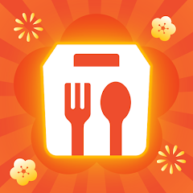

Trong trường hợp bạn không mở được ứng dụng đặt món bên dưới…
Bấm ⋯ ở góc phải phía trên → chọn “Mở bằng trình duyệt”
(hoặc “Mở trong Safari”), rồi chọn lại ứng dụng bên dưới.
Anh/chị chọn ứng dụng đặt món yêu thích bên dưới nhe! ^_^

ShopeeFood› GrabFood› BeFood› Xanh SM Ngon›Bấm là mở thẳng trang quán TUTE trong ứng dụng.